Ph.D.
Department of Geography
Ravenshw Univeristy
Cuttack-753003, India
Period: 2020-2025
A 'Geographer' with research interests in 'Climate' and 'Agriculture'.
I am PhD Scholar in Ravenshw Univeristy .

Department of Geography
Ravenshw Univeristy
Cuttack-753003, India
Period: 2020-2025
Department of Geography
Ravenshw Univeristy
Cuttack-753003, India
Period: 2019-2020
Department of Geography
Ravenshw Univeristy
Cuttack-753003, India
Period: 2017-2019
Belda College
(Vidyasagar University)
Medinipur
West Bengal-721102, India
Period: 2013-2017
Delhi School of Climate Change and Sustainability
Institution of Eminence
University of Delhi
New Delhi-110007, India
Advisor: Dr. Netrananda Sahu
Period: January 2022- Present
DST Center of Excellence in Climate Modelling
Center for Atmospheric Sciences
IIT Delhi
New Delhi-110016, India
Advisor: Dr. S.K. Mishra
Period: April 2021- Dec 2021
Department of Geography
Delhi School of Economics
University of Delhi
New Delhi-110007, India
Supervisor: Dr. Netrananda Sahu
Title: Shifting of Monsoon Onset and Its Impact on Environment in India
Period: 2016-Present
DST Center of Excellence in Climate Modellilng
Center for Atmospheric Sciences
Indian Institute of Technology Delhi
New Delhi–110016, India
Advisor: Dr. S.K. Mishra
Title: Monsoon Onset Shifting in India using Objective Criteria in Different Modes of Climate
Period: March 2019-October 2019
Department of Geography
Delhi School of Economics
University of Delhi
New Delhi-110007, India
Supervisor: Dr. Netrananda Sahu
Period: 2018-2021
Department of Geography
Delhi School of Economics
University of Delhi
New Delhi-110007, India
Supervisor: Dr. Netrananda Sahu
Period: 2016-2018
Indira Gandhi National Open University
Maidan Garhi
New Delhi–110068, India
Supervisor: Dr. Subhash Anand
Period: June 2015- March 2016
Department of Geography
Delhi School of Economics
University of Delhi
New Delhi-110007, India
Supervisor: Prof. R.B. Singh
Period: June 2011- May 2012
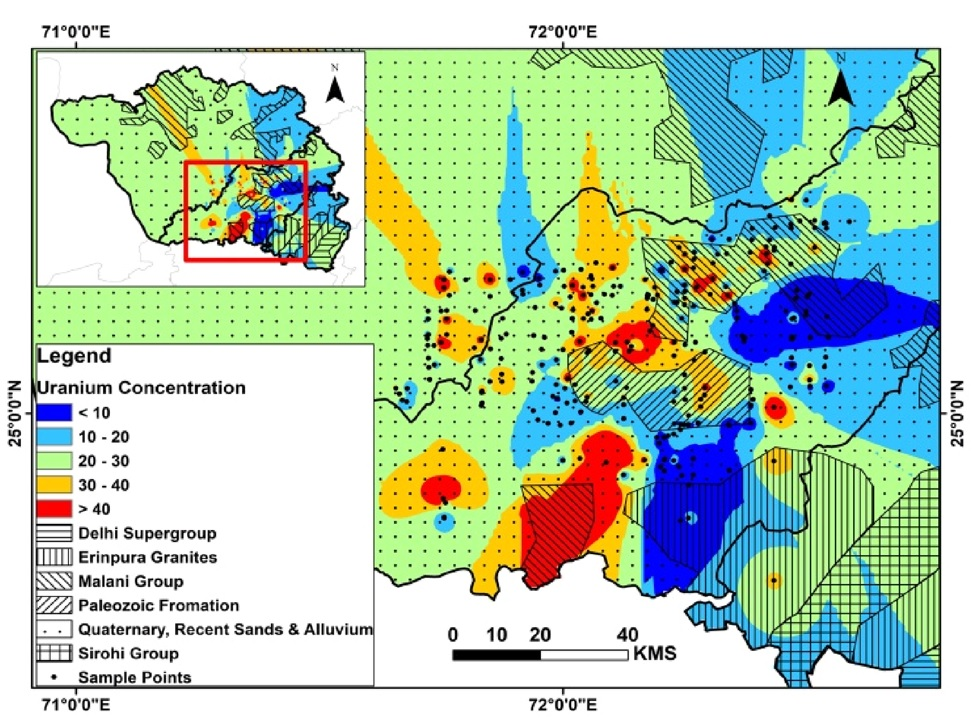
Water quality degradation and metal contamination in groundwater are serious concerns in an arid region with scanty water resources. This study aimed at evaluating the source of uranium (U) and potential health risk assessment in groundwater of the arid region of western Rajasthan and northern Gujarat. The probable source of vanadium (V) and fluorine (F) was also identified. U and trace metal concentration, along with physicochemical characteristics were determined for 265 groundwater samples collected from groundwater of duricrusts and palaeochannels of western Rajasthan and northern Gujarat. The U concentration ranged between 0.6 and 260 μg L− 1 with a mean value of 24 μg L− 1, and 30% of samples surpassed the World Health Organization’s limit for U (30 μg L−1). Speciation results suggested that dissolution of primary U mineral, carnotite [ K2(UO2)2(VO4)2·3H2O] governs the enrichment. Water–rock interaction and evaporation are found the major hydrogeochemical processes controlling U mineralization. Groundwater zones having high U concentrations are characterized by Na–Cl hydrogeochemical facies and high total dissolved solids.
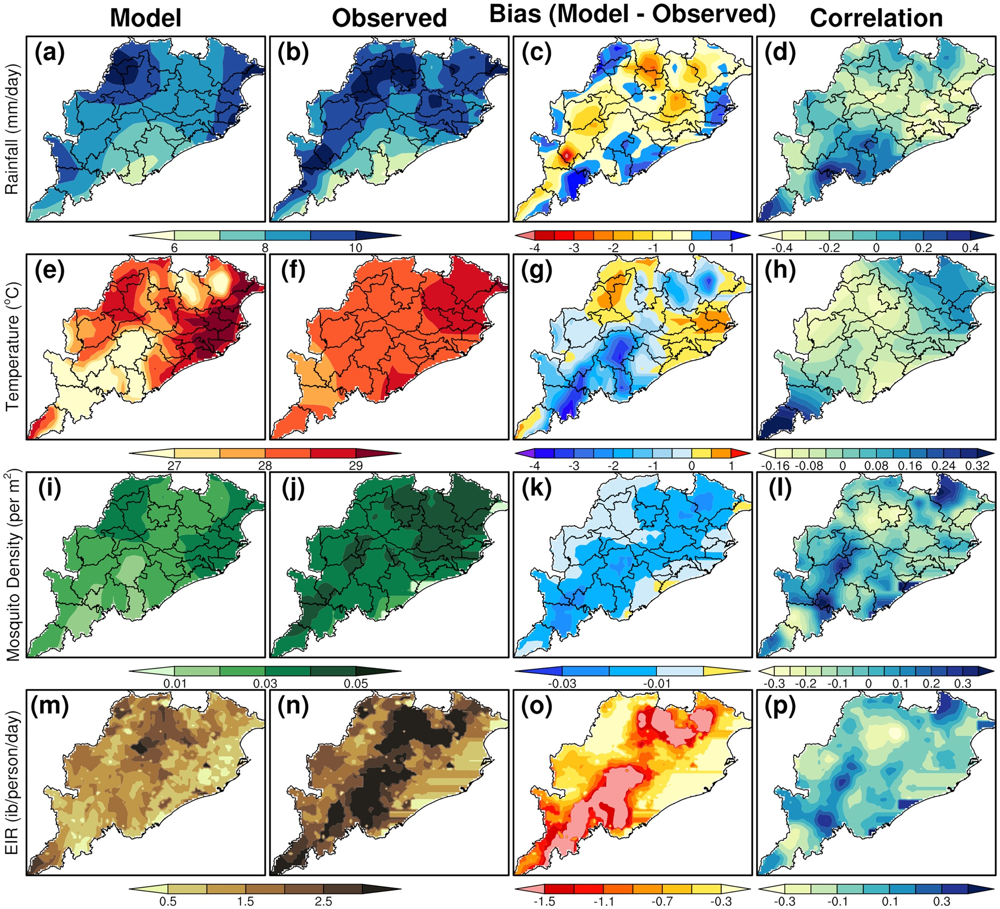
Future projections of malaria transmission is made for Odisha, a highly endemic region of India, through numerical simulations using the VECTRI dynamical model. The model is forced with biascorrected temperature and rainfall from a global climate model (CCSM4) for the baseline period 1975– 2005 and for the projection periods 2020s, 2050s, and 2080s under RCP8.5 emission scenario. The temperature, rainfall, mosquito density and entomological inoculation rate (EIR), generated from the VECTRI model are evaluated with the observation and analyzed further to estimate the future malaria transmission over Odisha on a spatio-temporal scale owing to climate change. Our results reveal that the malaria transmission in Odisha as a whole during summer and winter monsoon seasons may decrease in future due to the climate change except in few districts with the high elevations and dense forest regions such as Kandhamal, Koraput, Raygada and Mayurbhanj districts where an increase in malaria transmission is found.
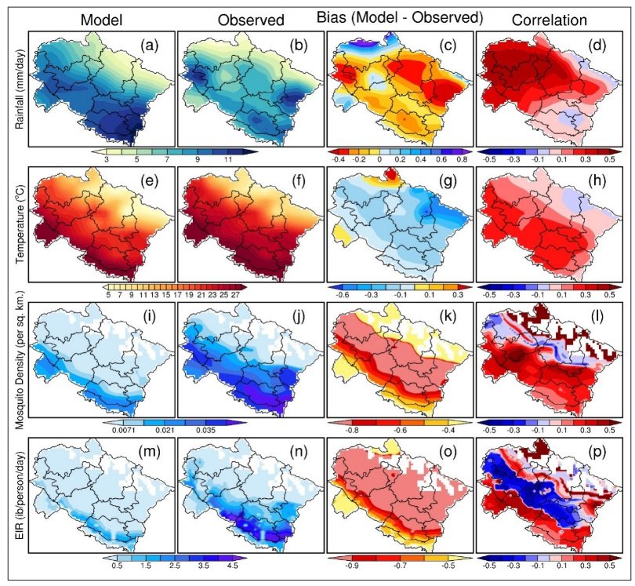
Mountainous regions in India are prone to malaria disease but with low intensity. In this context, Uttarakhand state, a hilly region situated in the northern parts of India and located in the central Himalayan region is also prone to malaria disease and malaria is present in four out of its 13 districts which are mainly plain stations. A numerical dynamical malaria model, VECTRI is used in this study based on various climatic and non-climatic parameters such as surface mean temperature, rainfall, population density etc. to predict the future malaria transmission dynamics in Uttarakhand state. VECTRI model is simulated with the inputs obtained from the CCSM4 global climate model for the baseline period (1975-2005) and for the near future projection period 2006-2035 (hereafter referred to as 2030s). Results indicate an overall increase in EIR values (increase is around 30%), indicating an increase in future malaria transmission in Uttarakhand state as a whole with a maximum increase in the central parts of the state which are plain areas with a warming temperature of 1°C and with an increase in rainfall of 15% by 2030s with respect to the baseline period.
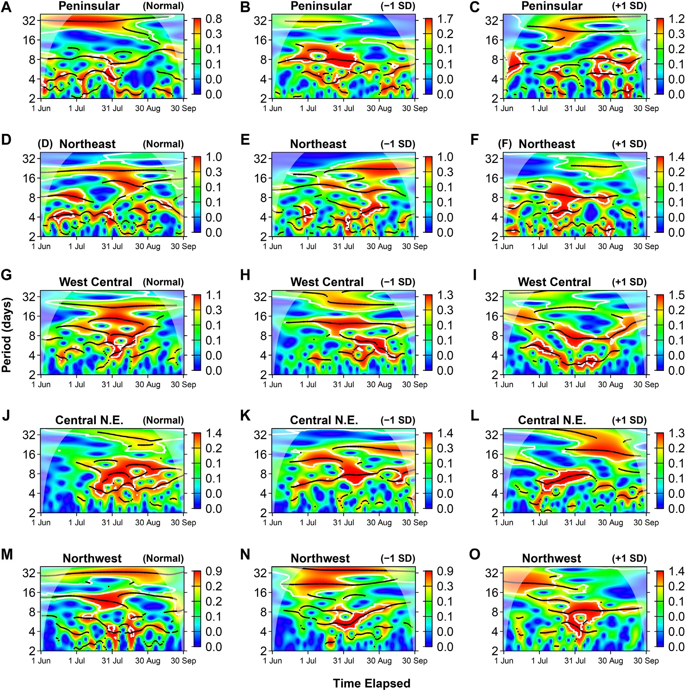
This study shows the trend of monsoon onset and the length of monsoon season in five homogenous monsoon regions of India. The association between 1) monsoon onset ∼ rainfall amount, 2) length of monsoon season ∼ rainfall amount, and 3) monsoon onset ∼ length of monsoon season is investigated. Subsequently, the behavior of rainfall and extreme excess days in the ±1 standard deviation (SD) length of monsoon season is also examined in detail. The trend for monsoon onset shows late onset in all the homogenous monsoon regions except the northeast region. The length of monsoon season is found increasing significantly with high magnitude in west central and northwest regions. A significantly strong negative correlation (∼−0.6) for monsoon onset timing ∼ length of monsoon season is observed. Extreme excess days showed a significant association with rainy days, which indicates a high possibility of rainy days converting into extreme excess days. However, the increase in extreme excess days in the +1 SD length of monsoon season is limited to a great extent in JJAS and June only.

This study performed a land use and land cover (LULC) change analysis over Southern India for the period 1981–2006 from the normalized difference vegetation index (NDVI) images of AVHRR data and applied the “observation minus reanalysis” (OMR) method to investigate the impact of the LULC change on the temperature of the region. The LULC change analysis indicated that the areas under agriculture/fallow land were significantly increased while the areas under shrubs/small vegetation were decreased during the period 1981–2006. The areas under forest cover and barren land were also decreased but relatively low compared to the other LULC types. The OMR results showed that the LULC changes over urban areas contributed to warming with a temperature of 0.02 °C during this period, while that over non-urban areas showed a cooling effect with a temperature reduction of 0.29 °C and that over the whole Southern India (looked at an average) indicated a cooling effect with a temperature reduction of 0.063 °C.
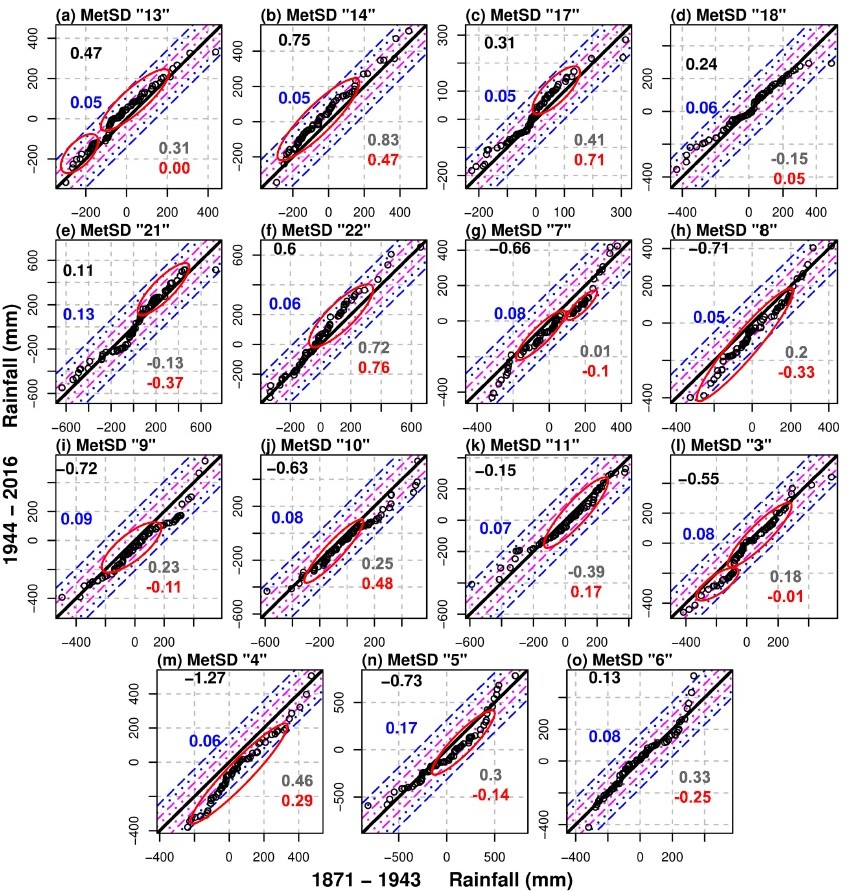
In this study, an in-depth investigation of the monsoon rainfall trend is analyzed for 146 years period (1871–2016). Three different spatial scales using a multimethod approach consisting of the Linear Regression Model (LRM), Mann Kendall Test (MKT) and Innovative Trend Analysis (ITA) are analyzed in particular and synchronized way. The synchronized methodology made it possible to identify the most refined significant monotonic trend. It revealed a decreasing monotonic trend in MetSD 4, 20 and 27 only. ITA based results revealed that MetSD 14, 8, 19 and 29 are a new addition to the list of MetSDs with the significant monotonic trend.
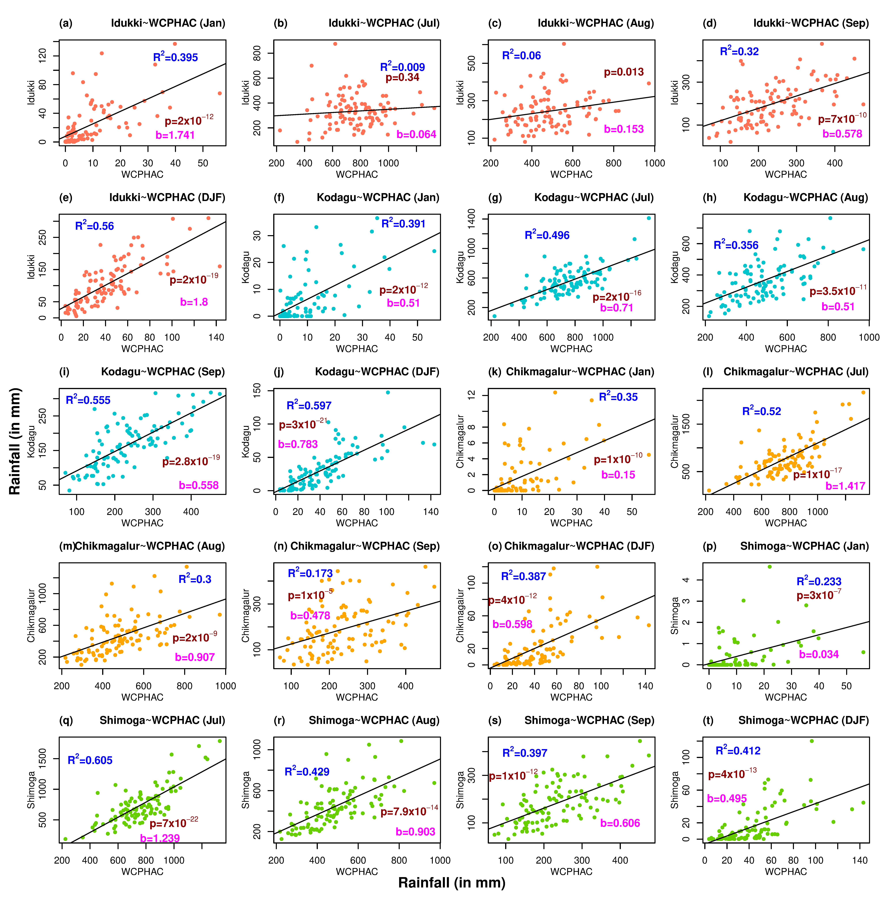
Results indicate that the rainfall trend is significant in January, July, August, September as well as the Winter season. Among all the significant trends, January and July showed a decreasing rainfall trend. July has the highest contribution (30%) among all the obtained monotonic trend to annual rainfall and coincidentally has the highest trend magnitude. August and September months with a combined contribution of 30% to annual rainfall, show an increasing monotonic trend with high magnitude whereas Winter season shows a monotonic decreasing rainfall trend with comparatively low magnitudes.
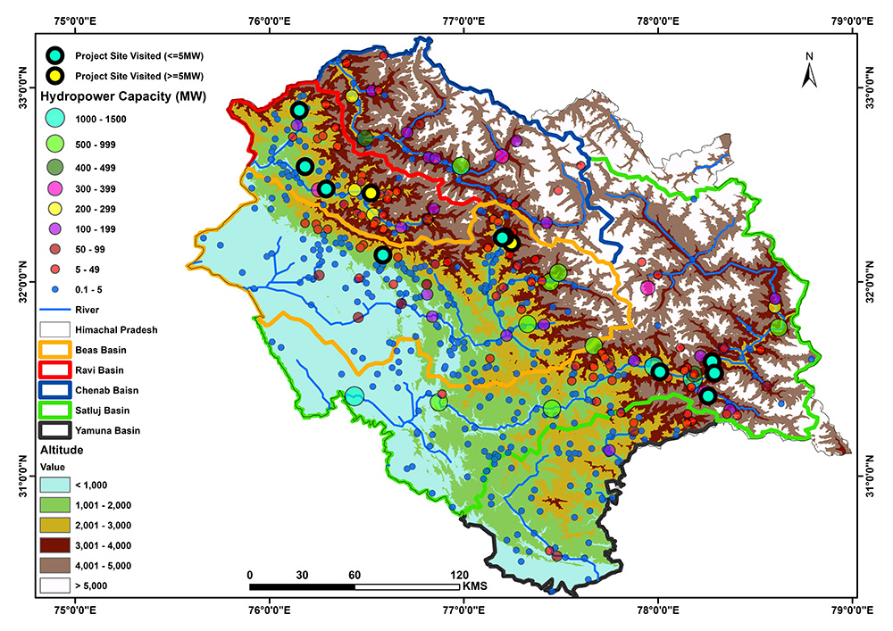
In this work, our focus was on the hydropower and climate change impact on the Himalayan river regimes of the Chenab, the Ravi, the Beas, the Satluj, and the Yamuna river basins. We analyzed basin-wise rainfall, temperature, and soil moisture data from 1955 to 2019 to see the trend by applying the Mann–Kendall test, the linear regression model, and Sen’s slope test. A basin-wise hazard zonation map has been drawn to assess the disaster vulnerability, and 12 hydropower sites have been covered through the primary survey for first-hand information of local perceptions and responses owing to hydropower plants.
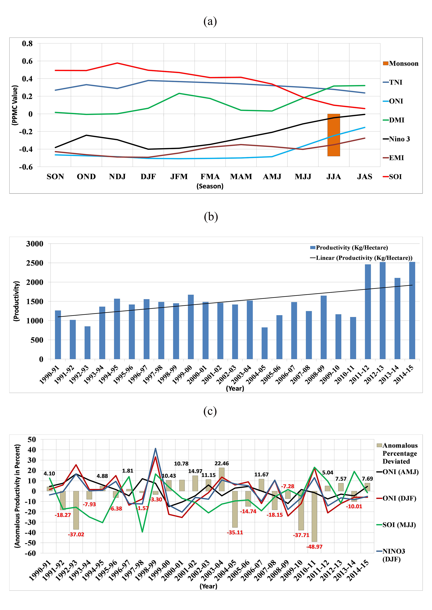
Rainfall, temperature and soil moisture anomalies are analyzed to observe the importance of climate factors in rice productivity. Along with the lack of rainfall, lack of soil moisture and persistent above normal temperature (especially maximum temperature) are found to be the important factors in cases of severe loss in rice productivity. Observation of the dynamics of ocean-atmosphere coupling through the composite map shows the Pacific warming signals during the event years. The analysis revealed a negative (positive) correlation of rice productivity with the Niño 3 and Ocean Niño Index (Southern Oscillation Index).
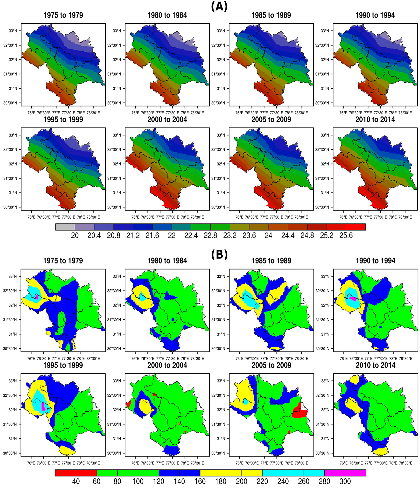
Data catalogued from different time periods indicates that the northward shift (towards higher altitude) is due to changes in chilling hours, total annual rainfall and mean surface temperature during the apple growing season. The mean surface temperature in all the districts has increased by almost 0.5°C during last 2000–2014. These changes are directly related to global warming. While the changing climate is reducing the apple production in low altitudinal regions of the state, it is creating new opportunities for apple cultivation in higher altitudes as conditions are getting more favourable for apple growth in those higher regions.
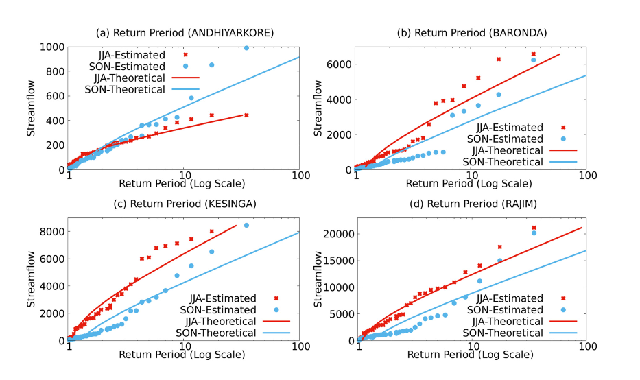
The impact of climate variability modes on extreme events of Mahanadi basin during June, July, and August (JJA), and September, October, and November (SON) seasons were analyzed, with daily streamflow data of four gauge stations for 34 years from 1980 to 2013 found to be associated with the sea surface temperature variations over Indo-Pacific oceans and Indian monsoon. The respective correlation values were 0.53, 0.38, 0.44, and 0.38 for Andhiyarkore, Baronda, Rajim, and Kesinga during JJA season. Again in the case of stepwise regression analysis, Monsoon Index for the June, July, and August (MI-JJA) season (0.537 for Andhiyarkore) plays significant role in determining streamflow of Mahanadi basin during the JJA season and Monsoon Index for July, August, and September (MI-JAS) season (0.410 for Baronda) has a strong effect in affecting streamflow of Mahanadi during the SON season. Flood frequency analysis with Weibull’s plotting position method indicates future floods in the Mahanadi river basin in JJA season.
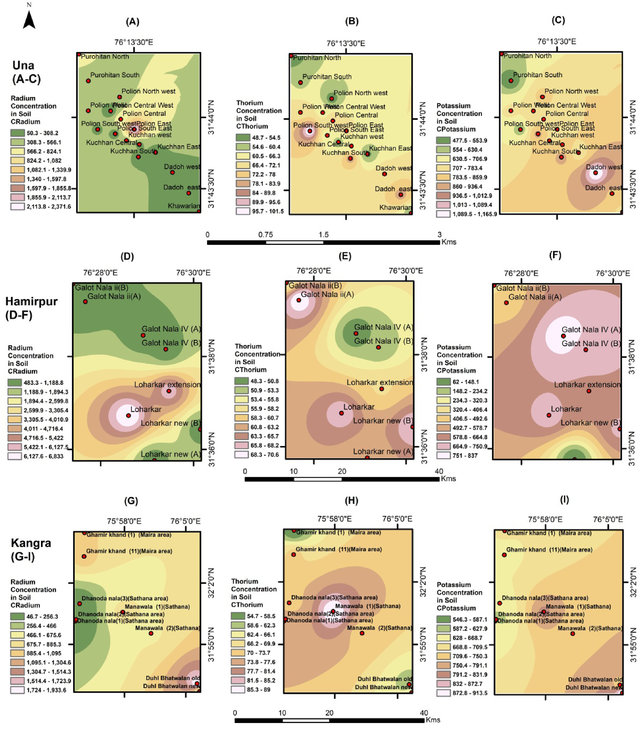
The present study reveals the distribution of terrestrial radionuclides and heavy metals from soil samples of Una, Hamirpur and Kangra districts of Himachal Pradesh (India). High disequilibrium factor depicts that uranium constantly migrates from clay oxidizing zone and getting precipitated with enrichment towards south. An attempt has been made to correlate the distribution of these radionuclides and heavy metals with geology and rock type formation of Siwalik region. The concentration of Pb, Zn and Co was found higher than Indian average background value. The non-carcinogenic and carcinogenic risks for both children and adults were within acceptable limits.